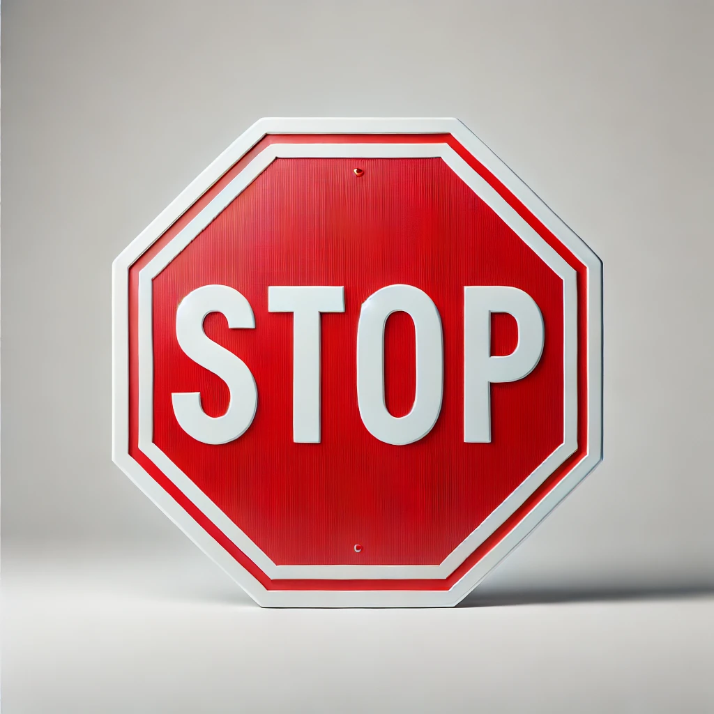

Stop and Consider

- Be deliberate
- Inaction causes stress. Action reduces stress
- Momentum. Doing things makes doing things easier = more things done loop
- Collect failures. We learn more from failures than successes
- Reduce friction. Make it easier to make the optimal choice